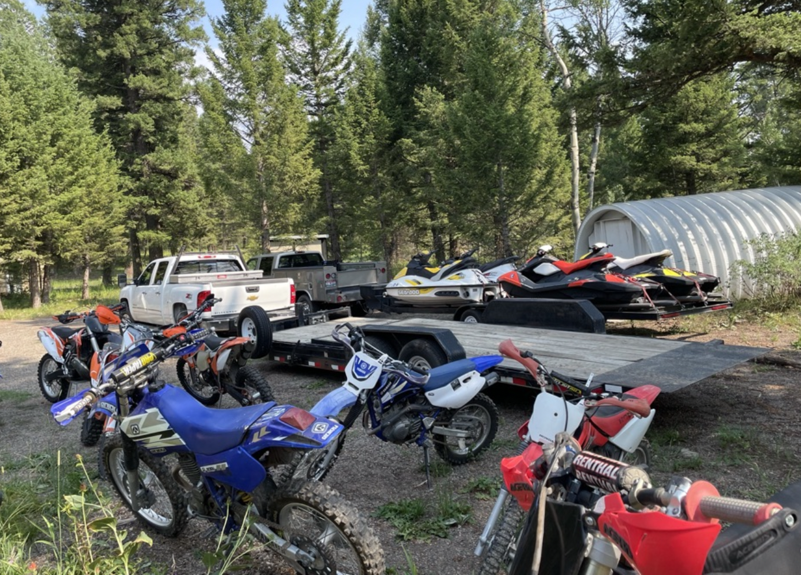
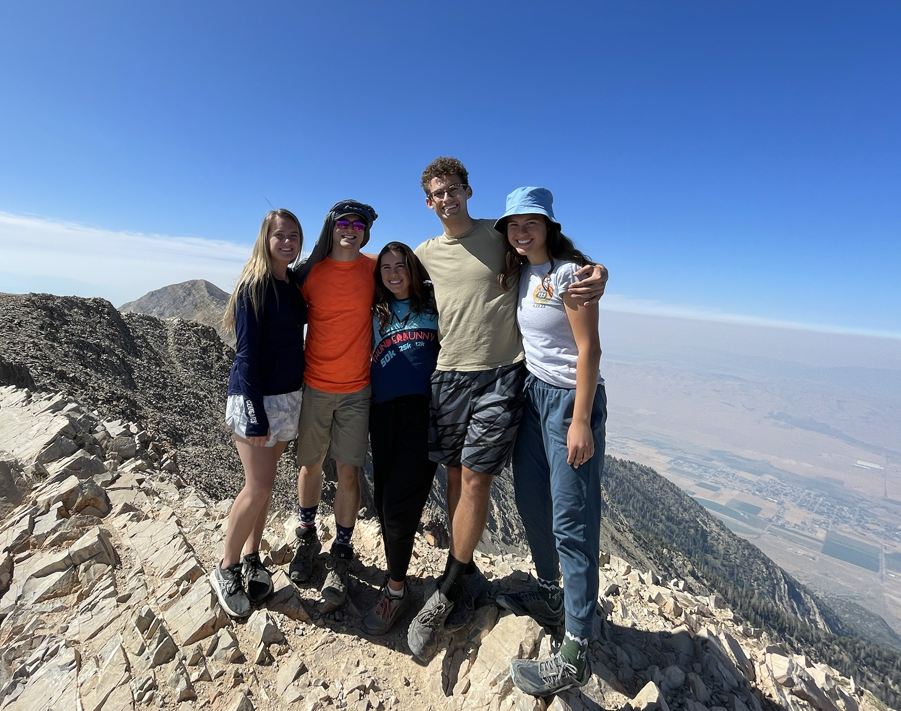
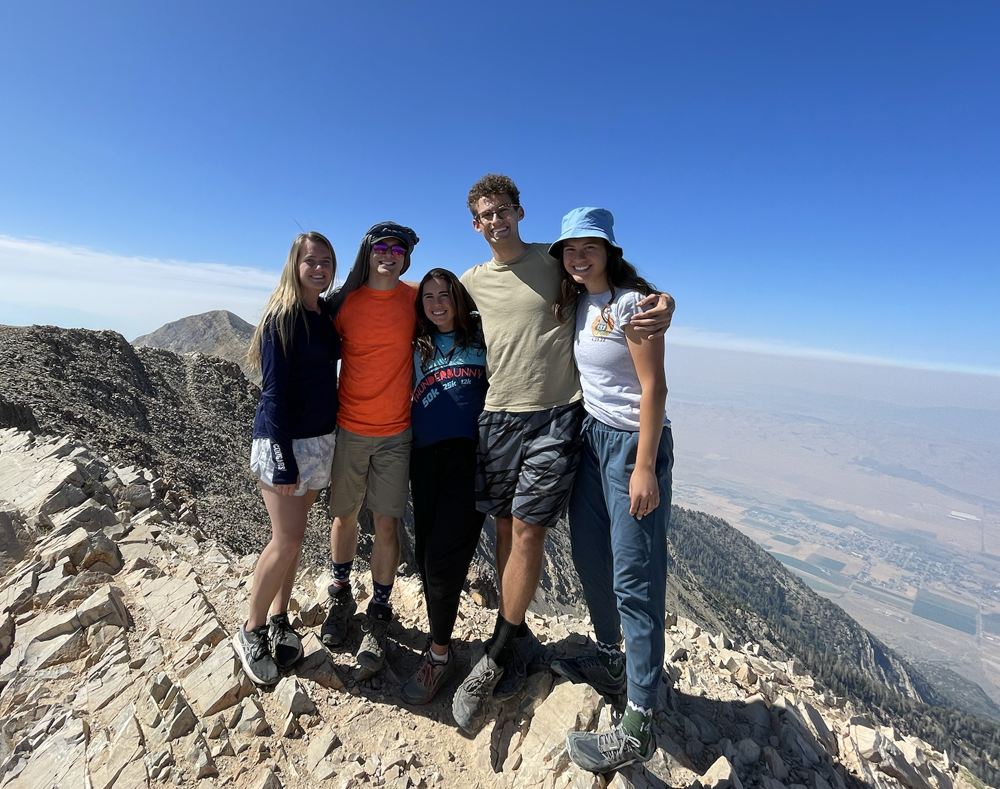

Michael Underwood is a Nationally ranked jump rope artist. Michael can speak a second language which he learned while serving his church in the Philippines. When Michael is not putting his IT expertise to use at work, he enjoys working out, being outdoors on hikes and camping trips with friends or watching movies with family members.
 
